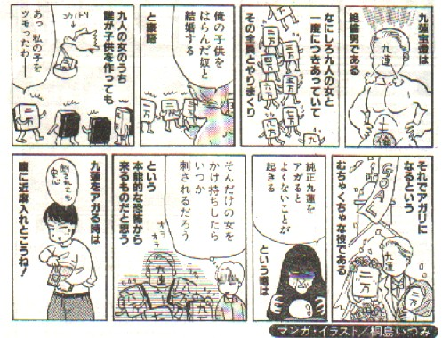

アガリ役は数々あれど、キング オブ キングスはやはり九蓮宝灯。現在は１と９が３枚づつ、２から８までが各１枚、ここに任意の同種牌が１枚加わった１雀頭４面子であれば九蓮宝灯と認められている。
しかし中国古典麻雀では九門張によるアガリでなければ不可であったという。こりはさすがに難しい。もちろん難度だけで言えば、四槓子や１３門張の国士無双だって負けてはいない。しかしテンパイ型やアガリ手の美しさなどで、人気はダントツといってよい。
もっとも古典的な中国麻雀では清一色の一気通貫が最高の得点であり、それを九蓮宝灯と称していたという（中国古文献「牌譜大成」）。やがて１と９を３枚備えたシンメトリー形（左右同型）によるアガリを最高点とするようになった。それにともない一気通貫は九蓮宝灯の要件から除外されたが、逆に九門張でなければ九蓮宝灯と認められなかった。しかし現在では和了型がこの型になっていれば可とされている。
九蓮宝灯は九蓮灯（チューレントー）とか九子蓮環（チューツれんかん）とも呼ばれ、中国でも人気があった。そこで紫気東来（チーチートンライ）とか天衣無縫(テンイーウーフォン）などという雅称もあった。紫気東来とは「紫の瑞気が東方よりたなびく」という、いかにもありがたそうな意味。天衣無縫は、「天女の衣服には縫い目が無い」という中国伝説に因んでいる。縫い目がないから、手牌１３枚以外の残り２３枚、どの牌でもアガれるというわけだ。これを張々可和(チャンチャンコホー＝どの牌でもアガリ可能）とも言う。
しかし実は手牌１３枚以外の残り２３枚、どの牌でもアガれるという張々可和型は九門張の九蓮宝灯だけではない。次の８種類のテンパイは、どれも張々可和である。
牌型 牌式
（１） １１１２３４５６６６６７８ ３１１１１４１１０
（２） ２２２３４５６７７７７８９ ０３１１１１４１１
（３） １２３３３３４５６７８８８ １１４１１１１３０
（４） ２３４４４４５６７８９９９ ０１１４１１１１３
（５） ２２２３４５６６７７７７８ ０３１１１２４１０（カギ）
（６） ２３３３３４４５６７８８８ ０１４２１１１３０（カギ）
（７） ２３４４４４５６６６６７８ ０１１４１４１１０
（８） ２３３３３４５６７７７７８ ０１４１１１４１０
以上８型はすべて張々可和であるが、よく見ると、（１）〜（６）までは槓仔（カンこ）が１組あるので実質は八門張、（７）（８）は２組あるので実質は七門張である。そこで前者を八連宝灯（パーレンポートン）、後者を七連宝灯（チーレンポートン）と称する。
※八連宝灯の（５）（６）の形は麻雀伝来後、日本で発見されたと言われる。途中に対子を挟む形が鍵型を連想させるというので、鍵型宝灯とも呼ばれる。
この九蓮宝灯、英語ではThe nine gates（九つの門)とか、The nine united sons(九人の団結した息子たち)、あるいはNine Lanterns（九つの宝灯）、Gates of Heaven(天国の門)などと呼ばれる。う〜ん、いずれも名訳だ。

|